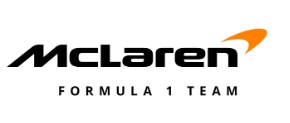
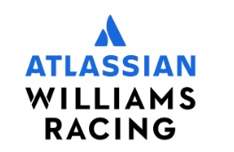
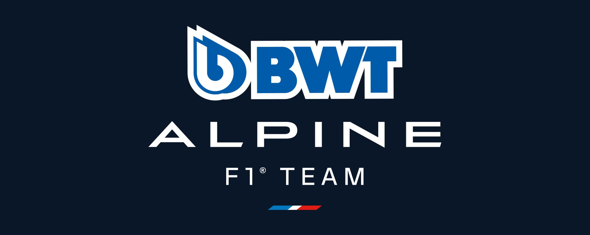
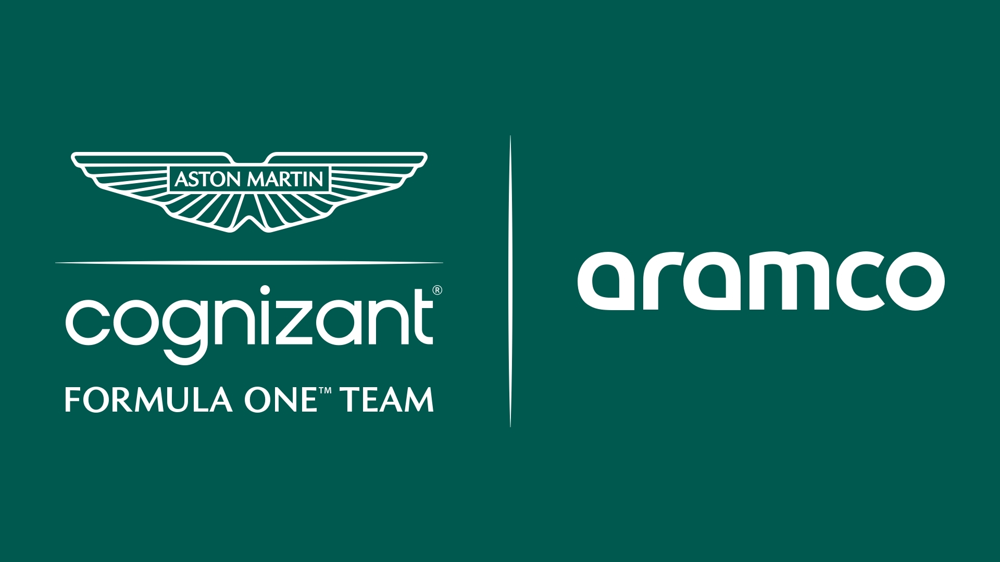

Mercedes-AMG Petronas
A Mercedes entrou com uma equipe oficial em 2010, mas sua história remonta à tradicional marca de carros de corrida da década de 1950. A era mais dominante veio entre 2014 e 2021, quando conquistou oito títulos consecutivos de construtores e sete de pilotos com Lewis Hamilton.

Scuderia Ferrari
Fundada por Enzo Ferrari em 1929, a Ferrari é a equipe mais antiga da Fórmula 1 ainda em atividade. É sinônimo de paixão e tradição, com numerosos campeonatos e uma legião de fãs ao redor do mundo.
Red Bull Racing
Estreando em 2005 após a compra da Jaguar Racing, a Red Bull ganhou destaque com Sebastian Vettel entre 2010 e 2013. Mais recentemente, tornou-se dominante com Max Verstappen, vencendo múltiplos títulos e empurrando os limites da engenharia moderna.

McLaren
Fundada em 1963 por Bruce McLaren, a equipe britânica é uma das mais bem-sucedidas na história da F1. Teve eras brilhantes com pilotos como Ayrton Senna, Alain Prost e, mais recentemente, Lando Norris, retornando às disputas de pódio.

Williams
Criada por Sir Frank Williams em 1977, a Williams dominou a década de 1980 e 1990, conquistando inúmeros títulos. A equipe manteve-se independente por décadas e é conhecida por sua abordagem técnica e espírito familiar.

Alpine (Renault)
A equipe já competiu como Renault, estreando na F1 em 1977. Foi rebatizada como Alpine em 2021 para promover a marca esportiva da Renault. Já conquistou campeonatos de pilotos com Fernando Alonso em 2005 e 2006.

Scuderia AlphaTauri
Conhecida anteriormente como Toro Rosso, a equipe estreou em 2006 como filial da Red Bull. Em 2020, Pierre Gasly venceu o Grande Prêmio da Itália, dando à equipe sua primeira vitória.

Aston Martin
A equipe retornou à Fórmula 1 em 2021 com o nome Aston Martin, mas suas raízes vêm da equipe Racing Point. Contando com pilotos como Sebastian Vettel, busca restaurar a tradição da lendária marca britânica nas pistas.